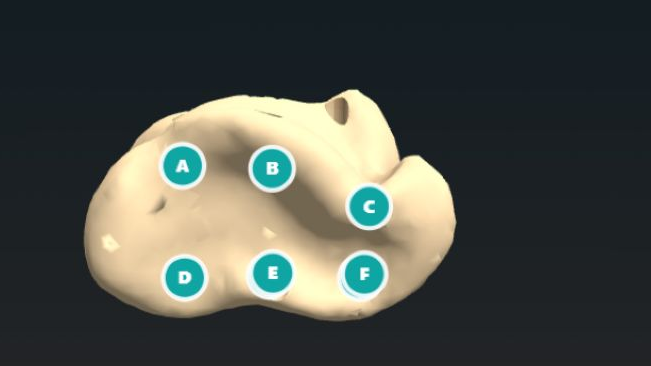

Les osselets à travers l'espace et le temps
Une carte interactive relie douze cas à une frise chronologique. Chaque notice distingue l'objet, le lieu, la période, la source et les limites de l'interprétation.
Ouvrir la carte et la friseObserver et expérimenter
Cette page réunit les ressources numériques qui complètent les dossiers imprimables : carte et frise, jeu interactif, modèles anatomiques 3D et animation externe.
Une carte interactive relie douze cas à une frise chronologique. Chaque notice distingue l'objet, le lieu, la période, la source et les limites de l'interprétation.
Ouvrir la carte et la frise
Une adaptation pédagogique contemporaine inspirée d'un principe de codage autour d'un osselet. Elle ne constitue pas la reconstitution définitive d'une pratique antique.
Capture du jeu local, 27 août 2026. Auteur, source et licence du modèle 3D à confirmer; usage pilote seulement.
Ouvrir le jeu seulAnatomie comparée
Ces visionneuses restent hébergées par Sketchfab. Elles servent à observer des formes et des positions; elles ne remplacent ni une notice scientifique ni une validation anatomique.
Comparaison à quatre
Quatre spécimens numériques présentés comme des astragales sont réunis dans cette boîte au moyen de deux scènes documentées par Ozboneviz. Fais tourner les os et observe leurs formes; leur taille apparente à l'écran ne constitue pas une mesure anatomique et ces quatre exemples ne suffisent pas pour identifier une espèce.
Ozboneviz; scans issus des collections de l'Université du Queensland, de l'Australian National University et de l'Idaho Museum of Natural History. Les notices MorphoSource et Sketchfab ne concordent pas toujours sur le côté gauche ou droit : ne pas utiliser ces scènes pour comparer les faces médiale et latérale avant validation. Les conditions de republication restent à vérifier.
Du détail à l'ensemble
Le premier modèle est présenté par son autrice comme un talus gauche isolé. Le second montre, dans un modèle distinct, la position d'un talus parmi les os du pied gauche. Le cadrage du talus est adapté à l'écran : les deux visionneuses ne partagent ni les mêmes données ni une échelle anatomique commune.
Catherine Sulzmann, via Sketchfab. La notice du pied affiche une licence Sketchfab Standard, qui n'est pas une licence ouverte; aucune licence exploitable n'est affichée pour le talus. Visionneuses externes uniquement; validation anatomique et conditions d'intégration à confirmer.
Scan de surface du spécimen DUNUC 2063, conservé au D'Arcy Thompson Zoology Museum de l'Université de Dundee. Hauteur indiquée : environ 30 cm.
University of Dundee Museum Collections, CC BY-NC-SA 4.0.
Voir la notice SketchfabMouvement du pied
L'American Academy of Orthopaedic Surgeons propose une animation qui compare pronation, surpronation et supination pendant la marche. Sa politique autorise les liens directs, mais interdit d'afficher son contenu dans une frame sur un autre site.